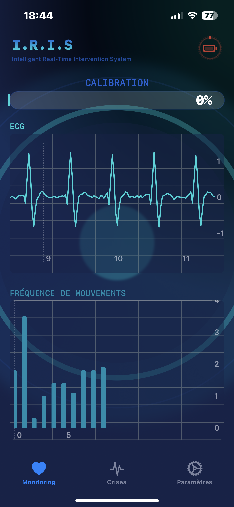
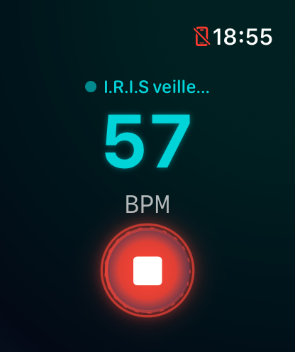

I.R.I.S
Système intelligent de détection des crises d'épilepsie pour Apple Watch
IRIS utilise votre Apple Watch pour détecter les signes précurseurs de crises d'épilepsie en temps réel et alerter automatiquement vos contacts d'urgence.
TÉLÉCHARGER


DÉTECTION EN TEMPS RÉEL
Surveillance continue des signes physiologiques caractéristiques d'une crise
ALERTES AUTOMATIQUES
Notification immédiate des contacts d'urgence avec localisation précise
SUIVI DÉTAILLÉ
Journal complet des événements pour un meilleur suivi médical